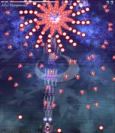
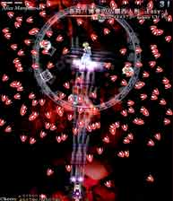
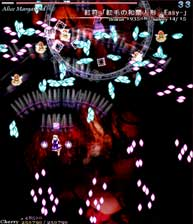
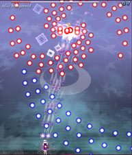
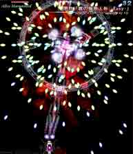
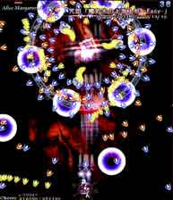

白いバラ撒き弾の後に上の画像の固定弾を撃ってくる。
赤弾より白弾の方が厄介なので白弾の時は避けるのに集中しよう。

アリスの周りに四体の雑魚が出てきて分裂する弾を放つ攻撃。
ランダムっぽく見えるけど、実はある程度パターン化されてるくさいです。
でも結局どのパターンが来るかはランダムだし、目で見て避けるにこした事は無いので、ある程度練習して場慣れすると良いでしょう。
蒼符「博愛の仏蘭西人形 -Easy-」の後に1回だけ通常攻撃を撃ってきますがすぐに弾が消えるので問題無し。
むしろこの通常攻撃のときに通常ショットを撃って桜点を稼ぎましょう。

上の方に雑魚が数体出てきて四方向に小さい弾の塊を撃つ攻撃。
この時の雑魚は撃破可能ですが倒しても復活します。アイテムを落とす事があるので出来ればたくさん倒そう。
画面の下の方だと小さい弾の塊がバラついてくるので真ん中辺りで避けるのが無難。

弾と弾の隙間に入って弾の軌道に沿って低速で避ければ簡単。

アリスの周りに雑魚四体が出てきて弾をたくさんバラ撒く攻撃。
目で見て避けるしか無いので注意。弾幕が濃くて危なかったらボムを打つ勇気。

雑魚が黄・茶色弾を撃ってアリスが大きい黒弾と青弾を全方向に撃つ攻撃。
毎回弾道が同じ攻撃（固定弾）なので何度か練習して安定させよう。
大きい黒弾は実は当たり判定が見せかけ騙しなぐらい小さいのでかすってみると良い。
黄色弾が横一列に迫ってくる時もあるので、その場合は高速移動。